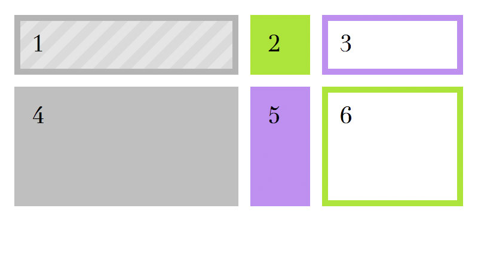

Fixed or Flexible
You can create a grid with fixed track sizes or with flexible sizes using percentages or the new fr fractional unit.

It looks like your web browser doesn’t support CSS Grid.
To see this demo, try viewing this page in the latest Firefox.
1
2
3
4
5
6
CSS
/* Three columns: 100px each */
.grid-container {
display: grid;
grid-template-columns: 100px 100px 100px;
grid-gap: 20px;
}
/* Three columns: 1 fraction, 2 fractions, 3 fractions */
.grid-container {
display: grid;
grid-template-columns: 1fr 2fr 3fr;
grid-gap: 20px;
}
/* Three columns: 50%, 100px, and the remaining available fraction */
/* Two rows: 100px and 200px */
.grid-container {
display: grid;
grid-template-columns: 50% 100px 1fr;
grid-template-rows: 100px 200px;
grid-gap: 20px;
}